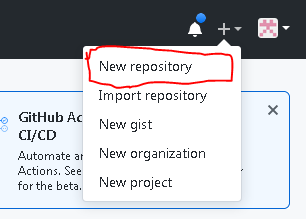
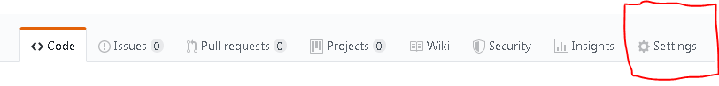
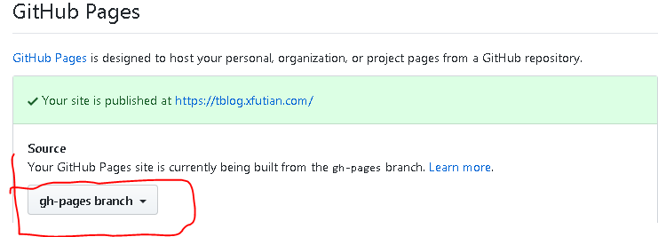
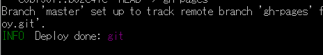

<!DOCTYPE html>
<html>
<head><meta name="generator" content="Hexo 3.9.0">
  <meta charset="utf-8">
  

  
  <title>hexo构建+github pages托管 的操作日志 | 一切福田，不离心田方寸</title>
  <meta name="viewport" content="width=device-width, initial-scale=1, maximum-scale=1">
  <meta name="description" content="hexo使用笔记大前提是要安装好Nodejs，操作忽略可参考这里以下的操作都是在Nodejs hexo 全局安装1$ npm install hexo-cli -g">
<meta name="keywords" content="nodejs,hexo,gitHub,托管">
<meta property="og:type" content="article">
<meta property="og:title" content="hexo构建+github pages托管 的操作日志">
<meta property="og:url" content="https://tblog.xfutian.com/2019/07/17/creatBlog/index.html">
<meta property="og:site_name" content="一切福田，不离心田方寸">
<meta property="og:description" content="hexo使用笔记大前提是要安装好Nodejs，操作忽略可参考这里以下的操作都是在Nodejs hexo 全局安装1$ npm install hexo-cli -g">
<meta property="og:locale" content="en">
<meta property="og:image" content="https://tblog.xfutian.com/2019/07/17/creatBlog/GitHub-crt-repositories.PNG">
<meta property="og:image" content="https://tblog.xfutian.com/2019/07/17/creatBlog/GitHub-pages-setting01.PNG">
<meta property="og:image" content="https://tblog.xfutian.com/2019/07/17/creatBlog/GitHub-pages-setting02.PNG">
<meta property="og:image" content="https://tblog.xfutian.com/2019/07/17/creatBlog/GitHub-pages-deploy.PNG">
<meta property="og:updated_time" content="2020-08-28T15:42:05.562Z">
<meta name="twitter:card" content="summary">
<meta name="twitter:title" content="hexo构建+github pages托管 的操作日志">
<meta name="twitter:description" content="hexo使用笔记大前提是要安装好Nodejs，操作忽略可参考这里以下的操作都是在Nodejs hexo 全局安装1$ npm install hexo-cli -g">
<meta name="twitter:image" content="https://tblog.xfutian.com/2019/07/17/creatBlog/GitHub-crt-repositories.PNG">
  
    <link rel="alternate" href="/atom.xml" title="一切福田，不离心田方寸" type="application/atom+xml">
  
  
    <link rel="icon" href="/favicon.png">
  
  
    <link href="//fonts.googleapis.com/css?family=Source+Code+Pro" rel="stylesheet" type="text/css">
  
  <link rel="stylesheet" href="/css/style.css">
</head>
</html>
<body>
  <div id="container">
    <div id="wrap">
      <header id="header">
  <div id="banner"></div>
  <div id="header-outer" class="outer">
    <div id="header-title" class="inner">
      <h1 id="logo-wrap">
        <a href="/" id="logo">一切福田，不离心田方寸</a>
      </h1>
      
        <h2 id="subtitle-wrap">
          <a href="/" id="subtitle">足迹</a>
        </h2>
      
    </div>
    <div id="header-inner" class="inner">
      <nav id="main-nav">
        <a id="main-nav-toggle" class="nav-icon"></a>
        
          <a class="main-nav-link" href="/">Home</a>
        
          <a class="main-nav-link" href="/archives">Archives</a>
        
          <a class="main-nav-link" href="https://mengxue.xfutian.com/daodejing/chapters/01.html">道德经拼音版</a>
        
          <a class="main-nav-link" href="https://xfutian.com/">拼音书籍列表</a>
        
      </nav>
      <nav id="sub-nav">
        
          <a id="nav-rss-link" class="nav-icon" href="/atom.xml" title="RSS Feed"></a>
        
        <a id="nav-search-btn" class="nav-icon" title="Search"></a>
      </nav>
      <div id="search-form-wrap">
        <form action="//google.com/search" method="get" accept-charset="UTF-8" class="search-form"><input type="search" name="q" class="search-form-input" placeholder="Search"><button type="submit" class="search-form-submit">&#xF002;</button><input type="hidden" name="sitesearch" value="https://tblog.xfutian.com"></form>
      </div>
    </div>
  </div>
</header>
      <div class="outer">
        <section id="main"><article id="post-creatBlog" class="article article-type-post" itemscope itemprop="blogPost">
  <div class="article-meta">
    <a href="/2019/07/17/creatBlog/" class="article-date">
  <time datetime="2019-07-17T10:30:38.000Z" itemprop="datePublished">2019-07-17</time>
</a>
    
  <div class="article-category">
    <a class="article-category-link" href="/categories/利器/">利器</a>►<a class="article-category-link" href="/categories/利器/hexo/">hexo</a>
  </div>

  </div>
  <div class="article-inner">
    
    
      <header class="article-header">
        
  
    <h1 class="article-title" itemprop="name">
      hexo构建+github pages托管 的操作日志
    </h1>
  

      </header>
    
    <div class="article-entry" itemprop="articleBody">
      
        <h1 id="hexo使用笔记"><a href="#hexo使用笔记" class="headerlink" title="hexo使用笔记"></a>hexo使用笔记</h1><h3 id="大前提是要安装好Nodejs，操作忽略可参考这里"><a href="#大前提是要安装好Nodejs，操作忽略可参考这里" class="headerlink" title="大前提是要安装好Nodejs，操作忽略可参考这里"></a>大前提是要安装好Nodejs，操作忽略可参考<a href="http://www.runoob.com/nodejs/nodejs-install-setup.html" target="_blank" rel="noopener">这里</a></h3><p>以下的操作都是在Nodejs</p>
<h4 id="hexo-全局安装"><a href="#hexo-全局安装" class="headerlink" title="hexo 全局安装"></a>hexo 全局安装</h4><figure class="highlight bash"><table><tr><td class="gutter"><pre><span class="line">1</span><br></pre></td><td class="code"><pre><span class="line">$ npm install hexo-cli -g</span><br></pre></td></tr></table></figure>

<a id="more"></a>
<h4 id="初始化博客目录"><a href="#初始化博客目录" class="headerlink" title="初始化博客目录"></a>初始化博客目录</h4><figure class="highlight bash"><table><tr><td class="gutter"><pre><span class="line">1</span><br></pre></td><td class="code"><pre><span class="line">$ hexo init ../techBlog</span><br></pre></td></tr></table></figure>

<h4 id="安装依赖"><a href="#安装依赖" class="headerlink" title="安装依赖"></a>安装依赖</h4><figure class="highlight bash"><table><tr><td class="gutter"><pre><span class="line">1</span><br></pre></td><td class="code"><pre><span class="line">$ npm install</span><br></pre></td></tr></table></figure>

<h4 id="新建一篇文章"><a href="#新建一篇文章" class="headerlink" title="新建一篇文章"></a>新建一篇文章</h4><figure class="highlight bash"><table><tr><td class="gutter"><pre><span class="line">1</span><br></pre></td><td class="code"><pre><span class="line">$ hexo new post <span class="string">"test first post"</span></span><br></pre></td></tr></table></figure>

<h4 id="新建一篇草稿"><a href="#新建一篇草稿" class="headerlink" title="新建一篇草稿"></a>新建一篇草稿</h4><figure class="highlight bash"><table><tr><td class="gutter"><pre><span class="line">1</span><br></pre></td><td class="code"><pre><span class="line">$ hexo new draft testFirst</span><br></pre></td></tr></table></figure>

<h4 id="编译生成静态站"><a href="#编译生成静态站" class="headerlink" title="编译生成静态站"></a>编译生成静态站</h4><figure class="highlight bash"><table><tr><td class="gutter"><pre><span class="line">1</span><br></pre></td><td class="code"><pre><span class="line">$ hexo g</span><br></pre></td></tr></table></figure>

<h4 id="启动本地服务器预览"><a href="#启动本地服务器预览" class="headerlink" title="启动本地服务器预览"></a>启动本地服务器预览</h4><figure class="highlight bash"><table><tr><td class="gutter"><pre><span class="line">1</span><br></pre></td><td class="code"><pre><span class="line">$ hexo s</span><br></pre></td></tr></table></figure>

<h4 id="启动本地服务器预览草稿"><a href="#启动本地服务器预览草稿" class="headerlink" title="启动本地服务器预览草稿"></a>启动本地服务器预览草稿</h4><figure class="highlight bash"><table><tr><td class="gutter"><pre><span class="line">1</span><br></pre></td><td class="code"><pre><span class="line">$ hexo s --draft</span><br></pre></td></tr></table></figure>

<hr>
<h3 id="gitHub-pages-托管"><a href="#gitHub-pages-托管" class="headerlink" title="gitHub pages 托管"></a>gitHub pages 托管</h3><h4 id="方式有2种"><a href="#方式有2种" class="headerlink" title="方式有2种"></a>方式有2种</h4><ol>
<li>user pages托管</li>
<li>project pages托管</li>
</ol>
<ul>
<li>因为网上大多介绍的是第一种，所以这里介绍第二种，理论上可以开无数个博客。</li>
</ul>
<ol>
<li><p>gitHub注册用户</p>
</li>
<li><p>建立２个仓库。（我这里一个叫tblog,一个叫tblogDeploy）</p>
<p></p>
</li>
<li><p>tblog只是用来存放博客的原始资料，gitHub上不用做任何设置。</p>
</li>
<li><p>tblogDeploy是公开博客的，对其进行如下设置</p>
<p></p>
<p></p>
</li>
<li><p>在自己的域名管理（买域名的地方）里面添加CNAME的映射，映射到【username】.github.io</p>
</li>
<li><p>techBlog/source 下添加CNAME文件，无扩展名。打开后在里面写入你的域名。</p>
</li>
<li><p>修改 _config.yml 使Hexo可以把生成好的静态博客自动发布到tblogDeploy仓库的gh-pages分枝，修改如下</p>
</li>
</ol>
<figure class="highlight bash"><table><tr><td class="gutter"><pre><span class="line">1</span><br><span class="line">2</span><br><span class="line">3</span><br><span class="line">4</span><br><span class="line">5</span><br><span class="line">6</span><br><span class="line">7</span><br></pre></td><td class="code"><pre><span class="line">url: https://tblog.xfutian.com</span><br><span class="line">root: /</span><br><span class="line"><span class="comment"># 中间略</span></span><br><span class="line">deploy:</span><br><span class="line">  <span class="built_in">type</span>: git</span><br><span class="line">  repo: https://github.com/yourName/tBlogDeploy.git</span><br><span class="line">  branch: gh-pages</span><br></pre></td></tr></table></figure>

<p>之后运行发布命令</p>
<figure class="highlight bash"><table><tr><td class="gutter"><pre><span class="line">1</span><br></pre></td><td class="code"><pre><span class="line">$ hexo deploy -g</span><br></pre></td></tr></table></figure>

<p></p>
<h4 id="大功告成！-祝你玩的开心"><a href="#大功告成！-祝你玩的开心" class="headerlink" title="大功告成！ 祝你玩的开心"></a>大功告成！ 祝你玩的开心</h4><p>追加:sitemap生成,rototstxt生成</p>
<figure class="highlight bash"><table><tr><td class="gutter"><pre><span class="line">1</span><br><span class="line">2</span><br></pre></td><td class="code"><pre><span class="line">npm install hexo-generator-seo-friendly-sitemap --save</span><br><span class="line">npm install hexo-generator-robotstxt --save</span><br></pre></td></tr></table></figure>

<p>追记：Win10 执行 hexo g 命令出错 （2020-08-29）</p>
<figure class="highlight plain"><table><tr><td class="gutter"><pre><span class="line">1</span><br><span class="line">2</span><br><span class="line">3</span><br><span class="line">4</span><br><span class="line">5</span><br><span class="line">6</span><br></pre></td><td class="code"><pre><span class="line">hexo : このシステムではスクリプトの実行が無効になっているため、ファイル C:\Program Files\nodejs\hexo.ps1 を読み込むことができません。詳細については、「a </span><br><span class="line">bout_Execution_Policies」(https://go.microsoft.com/fwlink/?LinkID=135170) を参照してください。</span><br><span class="line">発生場所 行:1 文字:1</span><br><span class="line">+ hexo g</span><br><span class="line">+ ~~~~</span><br><span class="line">    + CategoryInfo          : セキュリティ エラー: (: ) []、PSSecurityException</span><br></pre></td></tr></table></figure>

<p>解决方法是，用管理员权限启动PowerShell后执行下面3行</p>
<figure class="highlight plain"><table><tr><td class="gutter"><pre><span class="line">1</span><br><span class="line">2</span><br><span class="line">3</span><br></pre></td><td class="code"><pre><span class="line">$ PowerShell Set-ExecutionPolicy RemoteSigned</span><br><span class="line">$ cd &quot;C:\Program Files\nodejs\&quot;      #你hexo.ps1所在文件夹，错误信息里可以看到</span><br><span class="line">$ PowerShell .\hexo.ps1</span><br></pre></td></tr></table></figure>


      
    </div>
    <footer class="article-footer">
      <a data-url="https://tblog.xfutian.com/2019/07/17/creatBlog/" data-id="ckeeft3dy000a58tg4hmw6qq5" class="article-share-link">Share</a>
      
      
  <ul class="article-tag-list"><li class="article-tag-list-item"><a class="article-tag-list-link" href="/tags/gitHub/">gitHub</a></li><li class="article-tag-list-item"><a class="article-tag-list-link" href="/tags/hexo/">hexo</a></li><li class="article-tag-list-item"><a class="article-tag-list-link" href="/tags/nodejs/">nodejs</a></li><li class="article-tag-list-item"><a class="article-tag-list-link" href="/tags/托管/">托管</a></li></ul>

    </footer>
  </div>
  
    
<nav id="article-nav">
  
    <a href="/2019/07/20/gitlog-Garbled-win10-japnese/" id="article-nav-newer" class="article-nav-link-wrap">
      <strong class="article-nav-caption">Newer</strong>
      <div class="article-nav-title">
        
          Win10 日语环境，gitlog 乱码的解决方法
        
      </div>
    </a>
  
  
</nav>

  
</article>

</section>
        
          <aside id="sidebar">
  
    
  <div class="widget-wrap">
    <h3 class="widget-title">Categories</h3>
    <div class="widget">
      <ul class="category-list"><li class="category-list-item"><a class="category-list-link" href="/categories/利器/">利器</a><ul class="category-list-child"><li class="category-list-item"><a class="category-list-link" href="/categories/利器/Atom/">Atom</a></li><li class="category-list-item"><a class="category-list-link" href="/categories/利器/Gitbook/">Gitbook</a></li><li class="category-list-item"><a class="category-list-link" href="/categories/利器/MarkDown/">MarkDown</a></li><li class="category-list-item"><a class="category-list-link" href="/categories/利器/git/">git</a></li><li class="category-list-item"><a class="category-list-link" href="/categories/利器/hexo/">hexo</a></li><li class="category-list-item"><a class="category-list-link" href="/categories/利器/备份/">备份</a></li></ul></li><li class="category-list-item"><a class="category-list-link" href="/categories/启蒙/">启蒙</a><ul class="category-list-child"><li class="category-list-item"><a class="category-list-link" href="/categories/启蒙/拼音/">拼音</a></li></ul></li><li class="category-list-item"><a class="category-list-link" href="/categories/实践经验/">实践经验</a><ul class="category-list-child"><li class="category-list-item"><a class="category-list-link" href="/categories/实践经验/c/">c#</a></li><li class="category-list-item"><a class="category-list-link" href="/categories/实践经验/db/">db</a><ul class="category-list-child"><li class="category-list-item"><a class="category-list-link" href="/categories/实践经验/db/mssql/">mssql</a></li></ul></li></ul></li><li class="category-list-item"><a class="category-list-link" href="/categories/技术开发/">技术开发</a><ul class="category-list-child"><li class="category-list-item"><a class="category-list-link" href="/categories/技术开发/javascript/">javascript</a></li><li class="category-list-item"><a class="category-list-link" href="/categories/技术开发/mysql/">mysql</a></li><li class="category-list-item"><a class="category-list-link" href="/categories/技术开发/nodejs/">nodejs</a></li></ul></li></ul>
    </div>
  </div>


  
    
  <div class="widget-wrap">
    <h3 class="widget-title">Tags</h3>
    <div class="widget">
      <ul class="tag-list"><li class="tag-list-item"><a class="tag-list-link" href="/tags/DB/">DB</a></li><li class="tag-list-item"><a class="tag-list-link" href="/tags/ES6/">ES6</a></li><li class="tag-list-item"><a class="tag-list-link" href="/tags/Gitbook/">Gitbook</a></li><li class="tag-list-item"><a class="tag-list-link" href="/tags/MarkDown/">MarkDown</a></li><li class="tag-list-item"><a class="tag-list-link" href="/tags/MySQLWorkbench/">MySQLWorkbench</a></li><li class="tag-list-item"><a class="tag-list-link" href="/tags/OS/">OS</a></li><li class="tag-list-item"><a class="tag-list-link" href="/tags/WIN10/">WIN10</a></li><li class="tag-list-item"><a class="tag-list-link" href="/tags/Winform/">Winform</a></li><li class="tag-list-item"><a class="tag-list-link" href="/tags/atom/">atom</a></li><li class="tag-list-item"><a class="tag-list-link" href="/tags/c/">c#</a></li><li class="tag-list-item"><a class="tag-list-link" href="/tags/db/">db</a></li><li class="tag-list-item"><a class="tag-list-link" href="/tags/ejs/">ejs</a></li><li class="tag-list-item"><a class="tag-list-link" href="/tags/git/">git</a></li><li class="tag-list-item"><a class="tag-list-link" href="/tags/gitBook/">gitBook</a></li><li class="tag-list-item"><a class="tag-list-link" href="/tags/gitHub/">gitHub</a></li><li class="tag-list-item"><a class="tag-list-link" href="/tags/hexo/">hexo</a></li><li class="tag-list-item"><a class="tag-list-link" href="/tags/javascript/">javascript</a></li><li class="tag-list-item"><a class="tag-list-link" href="/tags/modaldialog/">modaldialog</a></li><li class="tag-list-item"><a class="tag-list-link" href="/tags/mssql/">mssql</a></li><li class="tag-list-item"><a class="tag-list-link" href="/tags/mysql/">mysql</a></li><li class="tag-list-item"><a class="tag-list-link" href="/tags/nodejs/">nodejs</a></li><li class="tag-list-item"><a class="tag-list-link" href="/tags/写作/">写作</a></li><li class="tag-list-item"><a class="tag-list-link" href="/tags/启蒙/">启蒙</a></li><li class="tag-list-item"><a class="tag-list-link" href="/tags/国学/">国学</a></li><li class="tag-list-item"><a class="tag-list-link" href="/tags/备份/">备份</a></li><li class="tag-list-item"><a class="tag-list-link" href="/tags/应急措施/">应急措施</a></li><li class="tag-list-item"><a class="tag-list-link" href="/tags/开发/">开发</a></li><li class="tag-list-item"><a class="tag-list-link" href="/tags/托管/">托管</a></li><li class="tag-list-item"><a class="tag-list-link" href="/tags/拼音/">拼音</a></li><li class="tag-list-item"><a class="tag-list-link" href="/tags/插件/">插件</a></li><li class="tag-list-item"><a class="tag-list-link" href="/tags/数据/">数据</a></li><li class="tag-list-item"><a class="tag-list-link" href="/tags/文件同步/">文件同步</a></li><li class="tag-list-item"><a class="tag-list-link" href="/tags/文本编辑器/">文本编辑器</a></li><li class="tag-list-item"><a class="tag-list-link" href="/tags/环境/">环境</a></li><li class="tag-list-item"><a class="tag-list-link" href="/tags/环境部署/">环境部署</a></li><li class="tag-list-item"><a class="tag-list-link" href="/tags/笔记/">笔记</a></li></ul>
    </div>
  </div>


  
    
  <div class="widget-wrap">
    <h3 class="widget-title">Tag Cloud</h3>
    <div class="widget tagcloud">
      <a href="/tags/DB/" style="font-size: 10px;">DB</a> <a href="/tags/ES6/" style="font-size: 10px;">ES6</a> <a href="/tags/Gitbook/" style="font-size: 10px;">Gitbook</a> <a href="/tags/MarkDown/" style="font-size: 13.33px;">MarkDown</a> <a href="/tags/MySQLWorkbench/" style="font-size: 10px;">MySQLWorkbench</a> <a href="/tags/OS/" style="font-size: 10px;">OS</a> <a href="/tags/WIN10/" style="font-size: 10px;">WIN10</a> <a href="/tags/Winform/" style="font-size: 10px;">Winform</a> <a href="/tags/atom/" style="font-size: 10px;">atom</a> <a href="/tags/c/" style="font-size: 10px;">c#</a> <a href="/tags/db/" style="font-size: 10px;">db</a> <a href="/tags/ejs/" style="font-size: 10px;">ejs</a> <a href="/tags/git/" style="font-size: 16.67px;">git</a> <a href="/tags/gitBook/" style="font-size: 10px;">gitBook</a> <a href="/tags/gitHub/" style="font-size: 10px;">gitHub</a> <a href="/tags/hexo/" style="font-size: 10px;">hexo</a> <a href="/tags/javascript/" style="font-size: 16.67px;">javascript</a> <a href="/tags/modaldialog/" style="font-size: 10px;">modaldialog</a> <a href="/tags/mssql/" style="font-size: 10px;">mssql</a> <a href="/tags/mysql/" style="font-size: 13.33px;">mysql</a> <a href="/tags/nodejs/" style="font-size: 20px;">nodejs</a> <a href="/tags/写作/" style="font-size: 13.33px;">写作</a> <a href="/tags/启蒙/" style="font-size: 10px;">启蒙</a> <a href="/tags/国学/" style="font-size: 10px;">国学</a> <a href="/tags/备份/" style="font-size: 10px;">备份</a> <a href="/tags/应急措施/" style="font-size: 10px;">应急措施</a> <a href="/tags/开发/" style="font-size: 10px;">开发</a> <a href="/tags/托管/" style="font-size: 10px;">托管</a> <a href="/tags/拼音/" style="font-size: 10px;">拼音</a> <a href="/tags/插件/" style="font-size: 10px;">插件</a> <a href="/tags/数据/" style="font-size: 10px;">数据</a> <a href="/tags/文件同步/" style="font-size: 10px;">文件同步</a> <a href="/tags/文本编辑器/" style="font-size: 10px;">文本编辑器</a> <a href="/tags/环境/" style="font-size: 10px;">环境</a> <a href="/tags/环境部署/" style="font-size: 10px;">环境部署</a> <a href="/tags/笔记/" style="font-size: 10px;">笔记</a>
    </div>
  </div>

  
    
  <div class="widget-wrap">
    <h3 class="widget-title">Archives</h3>
    <div class="widget">
      <ul class="archive-list"><li class="archive-list-item"><a class="archive-list-link" href="/archives/2020/08/">August 2020</a></li><li class="archive-list-item"><a class="archive-list-link" href="/archives/2020/07/">July 2020</a></li><li class="archive-list-item"><a class="archive-list-link" href="/archives/2020/02/">February 2020</a></li><li class="archive-list-item"><a class="archive-list-link" href="/archives/2019/10/">October 2019</a></li><li class="archive-list-item"><a class="archive-list-link" href="/archives/2019/09/">September 2019</a></li><li class="archive-list-item"><a class="archive-list-link" href="/archives/2019/08/">August 2019</a></li><li class="archive-list-item"><a class="archive-list-link" href="/archives/2019/07/">July 2019</a></li></ul>
    </div>
  </div>


  
    
  <div class="widget-wrap">
    <h3 class="widget-title">Recent Posts</h3>
    <div class="widget">
      <ul>
        
          <li>
            <a href="/2020/08/29/checkHalfAngle/">全角数字检测</a>
          </li>
        
          <li>
            <a href="/2020/08/29/visualStudioCode/">Visual Studio Code plugins 插件整理</a>
          </li>
        
          <li>
            <a href="/2020/07/22/csp-nonModal-dialog/">C#的Winform的Form，只锁住父亲窗口的方法。</a>
          </li>
        
          <li>
            <a href="/2020/02/14/nodejs-base-arry02/">JavaScript　数组合并与拆分</a>
          </li>
        
          <li>
            <a href="/2020/02/14/nodejs-base-arry01/">Javascript 判断素组里是否包含该元素</a>
          </li>
        
      </ul>
    </div>
  </div>

  
</aside>
        
      </div>
      <footer id="footer">
  
  <div class="outer">
    <div id="footer-info" class="inner">
      &copy; 2020 tson1<br>
      Powered by <a href="http://hexo.io/" target="_blank">Hexo</a>
    </div>
  </div>
</footer>
    </div>
    <nav id="mobile-nav">
  
    <a href="/" class="mobile-nav-link">Home</a>
  
    <a href="/archives" class="mobile-nav-link">Archives</a>
  
    <a href="https://mengxue.xfutian.com/daodejing/chapters/01.html" class="mobile-nav-link">道德经拼音版</a>
  
    <a href="https://xfutian.com/" class="mobile-nav-link">拼音书籍列表</a>
  
</nav>
    

<script src="//ajax.googleapis.com/ajax/libs/jquery/2.0.3/jquery.min.js"></script>


  <link rel="stylesheet" href="/fancybox/jquery.fancybox.css">
  <script src="/fancybox/jquery.fancybox.pack.js"></script>


<script src="/js/script.js"></script>


  </div>
</body>
</html>